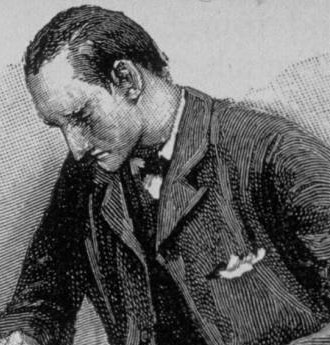

“Give me problems, give me work.”
In the year 1878 I took my degree of Doctor of Medicine of the University of London, and proceeded to Netley to go through the course prescribed for surgeons in the army. Having completed my studies there, I was duly attached to the Fifth Northumberland Fusiliers as Assistant Surgeon. The regiment was stationed in India at the time, and before I could join it, the second Afghan war had broken out. On landing at Bombay, I learned that my corps had advanced through the passes, and was already deep in the enemy’s country.
Victors + Villains
